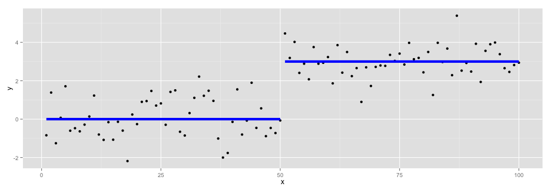
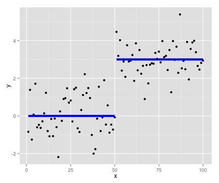
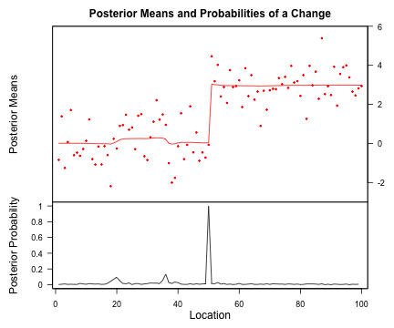

Graphical Product Partition Models
With an application in image processing
Xiaofei (Susan) Wang (email)
PhD Candidate, Yale University
http://xiaofei-wang.com
Joint work with John W. Emerson (website)
Overview
Classical Change Point Problem
Data: \(y_1,\dots, y_n\), where \(y_i \sim N(\theta_i, \sigma^2)\).
Example 1

Classical Change Point Problem
Example 2

Classical Change Point Problem
Example 2

Literature Survey
- Barry and Hartigan (1993), Erdman and Emerson (2007, 2008) - univariate change points via
library(bcp) - Barry and Hartigan (1994) - univariate change points on a grid
- Bai and Perron (2003), Zeileis, et al. (2001) - regression change points via
library(strucchange) - Muggeo (2003) - regression change points via
library(segmented) - Olshen, et al. (2004) - univariate change points using circular binary segmentation
- Fearnhead (2005) - Bayesian regression change points
- Loschi, et al. (2010) - Bayesian regression change points
- Killick and Eckley (2011) - univariate mean or variance change points via
library(changepoint) - Ross (2012) - distributional univariate change points via
library(cpm) - Matteson and James (2013) - multivariate change points via
library(ecp) - ... and others
Bayesian Change Point Analysis
Barry & Hartigan (1993): A Product Partition Model
Product Partition Models (PPMs)
Hartigan (1990):
Product partition models assume that observations in different components of a random partition of the data are independent given the partition.
Bayesian Change Point Analysis
- Univariate change point analysis (Barry & Hartigan 1992)
- Implemented by Erdman & Emerson (2007, 2008) in
library(bcp)
Example 1 (revisited)

Example 1 (bcp output)

Extensions
Simple linear regression
Example 3

Example 3 (posterior output)

Multivariate change point
Example 4

Example 4 (posterior output)

Moving to a Grid
Change Points on a Grid
Barry and Hartigan (1994)
Example 5

Example 5 (posterior means)

Change Points on a Grid
What does it mean to have a change point on a grid?
In 1 dimension

Change Points on a Grid
What does it mean to have a change point on a grid?
In 2 dimensions
Change Points on a Grid
The model only differs in the prior.
- Boundary length \(l(\rho)\)
\[ f(\rho)\propto \alpha^{l(\rho)} \;\;\;\;\; \alpha\in(0,1)\] - Small \(\alpha\) encourages shorter boundaries
- Results are very sensitive to choice of \(\alpha\)
However, the MCMC implementation is much more complicated.
Application
Image Restoration
Example 6
Example 6 (posterior means)

Application: Multivariate
Image Restoration
Example 7 (RGB channels)

Example 7 (posterior means)

Application: Multivariate
Ad-Hoc Image Segmentation (via k-means)
Example 7 (segments)


From Grid to Graph
Example 8
Example 8 (change point output)
Future Directions
Next Steps
- Refining and improving the graphical change point method for both the univariate and multivariate cases.
- Extending the graphical change point method to fitting regressions.
Thank You
Acknowledgements
I would like to thank my advisors Jay Emerson and Joseph Chang for their support and neverending wealth of ideas. Also, I would also like to thank my academic grandfather, John Hartigan, for pioneering the concept of product partition models.
References
- Barry, Daniel, and John A. Hartigan. "A Bayesian analysis for change point problems." Journal of the American Statistical Association 88.421 (1993): 309-319.
- Hartigan, John A. "Partition models." Communications in Statistics-Theory and Methods 19.8 (1990): 2745-2756.
- Barry D, Hartigan JA. A product partition model for image restoration. In New Directions in Statistical Data Analysis and Robustness, MorgenthalerS (ed.). Birkhäuser: Basel, 1994.
- Erdman, Chandra, and John W. Emerson. "bcp: An R package for performing a Bayesian analysis of change point problems." Journal of Statistical Software 23.3 (2007): 1-13.
- Erdman, Chandra, and John W. Emerson. "A fast Bayesian change point analysis for the segmentation of microarray data." Bioinformatics 24.19 (2008): 2143-2148.
- Matteson, David S., and Nicholas A. James. "A nonparametric approach for multiple change point analysis of multivariate data." arXiv preprint arXiv:1306.4933 (2013).
- Bai, Jushan, and Pierre Perron. "Computation and analysis of multiple structural change models." Journal of Applied Econometrics 18.1 (2003): 1-22.
References
- Loschi, Rosangela H., Jeanne G. Pontel, and Frederico RB Cruz. "Multiple change-point analysis for linear regression models." Chilean Journal of Statistics 1 (2010): 93-112.
- Fearnhead, Paul. "Exact Bayesian curve fitting and signal segmentation." Signal Processing, IEEE Transactions on 53.6 (2005): 2160-2166.
- Killick, Rebecca, and Idris A. Eckley. "Changepoint: an R package for changepoint analysis." Lancaster University (2011).
- Ross, Gordon J. "Parametric and Nonparametric Sequential Change Detection in R: The cpm package." Journal of Statistical Software, 2012.
- Hegarty, Avril, and Daniel Barry. "Bayesian disease mapping using product partition models." Statistics in medicine 27.19 (2008): 3868-3893.
- Muggeo, Vito MR. "Estimating regression models with unknown break‐points." Statistics in medicine 22.19 (2003): 3055-3071.
- Olshen, Adam B., et al. "Circular binary segmentation for the analysis of array‐based DNA copy number data." Biostatistics 5.4 (2004): 557-572.
References
- Zeileis, Achim, et al. "strucchange. An R package for testing for structural change in linear regression models." (2001).